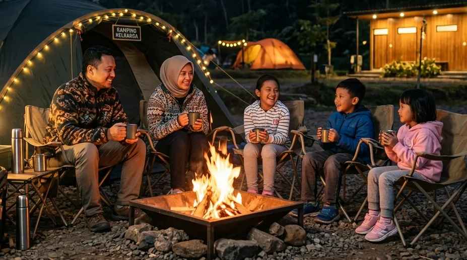

Merencanakan liburan akhir pekan bersama keluarga seringkali menjadi sebuah dilema tersendiri. Di satu sisi, para orang tua ingin menjauhkan anak-anak dari layar *gadget* dan membawa mereka menghirup udara segar di alam bebas. Namun di sisi lain, bayangan akan kurangnya sarana kebersihan, udara dingin yang ekstrem, dan keamanan di alam liar kerap membuat para ibu mengurungkan niat tersebut. Untungnya, di tahun 2026 ini, industri pariwisata alam telah merespons kekhawatiran tersebut dengan sangat luar biasa.
Jika Anda mengetikkan kueri pencarian Camping Ground Batu Fasilitas Lengkap: Wisata Ground Camping Batu Malang yang Aman untuk Keluarga, Anda sedang berada di jalur yang sangat tepat. Kota Batu telah menasbihkan dirinya sebagai pionir kawasan ekowisata yang sukses memadukan liarnya panorama alam pegunungan dengan kenyamanan infrastruktur berskala hotel. Artikel panduan komprehensif ini akan menguliti secara mendalam mengapa Anda tak perlu ragu lagi membawa balita atau lansia untuk berkemah, kriteria fasilitas apa saja yang harus Anda tuntut dari sebuah pengelola, hingga rekomendasi destinasi kemah keluarga paling aman di Kota Apel.
1. Mengapa Memilih Wisata Ground Camping Batu Malang untuk Keluarga?
Banyak kawasan pegunungan di Indonesia yang menawarkan keindahan, namun sangat sedikit yang memiliki kematangan manajemen tata ruang seperti Kota Batu. Berikut adalah alasan fundamental mengapa kota ini sangat ideal untuk keluarga.
Udara Sejuk Pegunungan yang Menyehatkan
Kota Batu berada di elevasi antara 700 hingga 1.700 meter di atas permukaan laut (MDPL), diapit oleh Gunung Arjuno, Gunung Welirang, dan Gunung Panderman. Topografi tapal kuda ini menciptakan sebuah kantung iklim mikro yang sangat sejuk, di mana suhu rata-rata malam hari berkisar antara 14 hingga 18 derajat Celcius. Bagi paru-paru anak-anak yang selama ini terpapar emisi gas buang perkotaan, udara murni yang dihasilkan oleh rimbunnya hutan pinus Batu adalah terapi pernapasan alami yang sangat menyegarkan.
Akses Transportasi yang Sangat Ramah Kendaraan
Hal yang paling menakutkan bagi orang tua saat berkemah adalah keharusan untuk menggendong anak atau memanggul tenda berjalan kaki melintasi hutan (trekking). Di Batu, konsep tersebut sudah banyak ditinggalkan. Infrastruktur pariwisata yang mapan memastikan jalan aspal makadam sudah menyentuh langsung area perkemahan. Mobil jenis *City Car* maupun *MPV* keluarga Anda bisa diparkir persis di sebelah tanah lapang tempat tenda didirikan (*Campervan Friendly*), menjadikan proses bongkar muat barang sangat efisien.
BACA JUGA (Edukasi Keluarga):
2. Standar Camping Ground Batu Fasilitas Lengkap yang Wajib Ada
Membawa predikat "aman untuk keluarga" berarti sebuah pengelola perkemahan harus lolos verifikasi infrastruktur dasar. Sebelum Anda melakukan pemesanan, pastikan tempat tersebut memiliki tiga pilar kenyamanan berikut:
Ketersediaan Toilet Bersih dan Air Hangat
Toilet adalah kunci kebahagiaan liburan keluarga. Anda wajib mencari Camping Ground Batu Fasilitas Lengkap yang memiliki bangunan sanitasi permanen (*bukan bilik seng*). Toilet tersebut harus memiliki kloset duduk (*flushing*), lantai keramik yang rutin dibersihkan oleh staf, dan yang terpenting: fasilitas pemanas air (*water heater*). Adanya air hangat akan memastikan anak-anak Anda tetap bisa mandi atau membersihkan diri di pagi hari tanpa harus menangis karena kedinginan.
Sistem Keamanan 24 Jam dan Penerangan Cukup
Tidur di alam bebas memang gelap, namun area komunal di sekitar perkemahan keluarga harus memiliki standar pencahayaan (*lighting*) yang baik dari lampu sorot untuk mencegah hal-hal yang tidak diinginkan (seperti tersandung akar pohon). Selain itu, keberadaan pagar pembatas area yang jelas dan pos penjagaan *security* yang aktif berpatroli 24 jam adalah syarat mutlak bagi perlindungan keluarga Anda.
Akses Listrik (Colokan) di Sekitar Area Tenda
Era modern menuntut kita untuk tetap terhubung. Ketersediaan panel stop kontak listrik di dekat area *pitching* tenda sangat krusial. Listrik ini bukan sekadar untuk *charging smartphone*, tetapi sangat berguna bagi keluarga yang perlu merebus air MPASI anak menggunakan teko elektrik portabel, menyalakan kipas angin kecil, atau mengoperasikan pompa kasur angin elektrik di dalam tenda.
3. Rekomendasi Spot Kemah Keluarga Terbaik di Batu
Tentu saja, dari puluhan titik kemah yang bertebaran di Kota Batu, Anda butuh kurasi yang tepat agar tidak salah pilih tujuan.

Penggunaan tenda tipe *double layer* yang luas adalah standar mutlak untuk menjamin keluarga Anda terhindar dari rembesan air embun pagi. (Dokumentasi: Batu Sunrise Camp)Batu Sunrise Camp (Rekomendasi Utama & VIP)
Jika kita mengacu pada kata kunci Wisata Ground Camping Batu Malang yang Aman untuk Keluarga, maka nama Batu Sunrise Camp berada di puncak hierarki. Spot ini dirancang dengan visi "Kenyamanan Tanpa Kompromi".
Di sini, keluarga Anda tidak perlu bersusah payah merakit tenda dari nol. Pengelola menyediakan paket sewa *All-In* yang menggunakan tenda berspesifikasi tinggi (*double layer polyurethane*) yang anti-badai dan anti-kondensasi. Bagian dalamnya dialasi oleh susunan matras ketebalan ekstra dan *sleeping bag* harum yang di-*laundry* setiap hari. Secara fasilitas, Batu Sunrise Camp memiliki deretan blok toilet bilas yang kebersihannya setara dengan *rest area* jalan tol premium, instalasi colokan listrik yang aman, serta area rumput datar yang sangat luas sehingga anak-anak bisa bebas berlarian menangkap belalang dengan aman. Plus, lokasinya menghadap langsung ke arah timur, memastikan keluarga Anda mendapat sajian *Golden Sunrise* yang memukau tanpa harus beranjak dari teras tenda.
Alternatif Bumi Perkemahan Ramah Anak Lainnya
Sebagai opsi kedua, kawasan Bumi Perkemahan Bedengan juga sering menjadi jujugan keluarga yang mencari suasana *back to nature*. Rimbunnya pohon pinus dan aliran sungai kecil berbatu di tengah area kemah menjadi wahana bermain air alami yang sangat digemari anak-anak di siang hari. Namun, secara fasilitas toilet dan kelistrikan, areanya lebih ditujukan bagi wisatawan yang siap sedikit lebih mandiri.
4. Persiapan Penting Kemah Bersama Anak-Anak agar Tidak Rewel
Meskipun Anda sudah memilih *camping ground* terbaik dengan fasilitas terlengkap, persiapan dari dalam internal keluarga tetap menjadi garda pertahanan utama.
Penerapan Layering System untuk Pakaian Anak
Hukum pertama membawa balita ke gunung: Jangan pernah pakaikan mereka celana jeans tebal! Terapkanlah 3-Layering System secara disiplin. Lapis pertama (*base layer*) pakaikan baju berbahan *polyester/dry-fit* agar keringat anak saat bermain siang hari cepat menguap dan tidak menyebabkan masuk angin. Saat sore mulai turun, pakaikan lapis kedua (*mid layer*) berupa jaket *fleece*/polar hangat. Saat malam hari tiba, bungkus mereka dengan lapis ketiga (*outer*) berupa jaket parasit/windbreaker penahan angin. Lengkapi tubuh mungil mereka dengan kaus kaki tebal ganda dan kupluk rajut penutup telinga.
Wajib Membawa Kotak P3K dan Obat Pribadi
Kawasan gunung tidak berdekatan dengan apotek 24 jam. Bunda diwajibkan menyusun kotak *First Aid* sendiri yang berisi: Plester luka, antiseptik, minyak telon botol besar untuk diusapkan ke perut anak, termometer, obat pereda demam (paracetamol sirup), obat anti-mual, serta krim pengusir serangga (meskipun di suhu dingin serangga cenderung sedikit). Persiapan ini akan menyelamatkan kepanikan di tengah malam.
BACA JUGA (Efisiensi Biaya):
5. Aktivitas Edukatif dan Seru di Alam Terbuka
Anak-anak memiliki energi yang seakan tak pernah habis. Jangan biarkan mereka merasa bosan dan kembali merengek meminta *gadget* karena tidak ada aktivitas seru yang disiapkan orang tuanya.
Rancanglah kegiatan *fun-education*. Anda bisa mengajak mereka mencari dedaunan beraneka bentuk untuk dibuat kolase, mengajari mereka nama-nama rasi bintang di malam hari, atau menugaskan mereka memegang senter (*headlamp*) saat Anda meracik bumbu masakan. Saat makan malam tiba, manfaatkan area fire pit komunal yang aman untuk memanggang *marshmallow* atau sosis sapi bakar. Jika keluarga Anda menyukai sedikit tantangan, Anda juga bisa menyewa jasa armada Jeep 4x4 Off-Road wisata berkeliling hutan pinus (selama rutenya aman untuk anak) untuk memberikan mereka pengalaman terguncang seru yang tak terlupakan.
6. Kesimpulan
Membawa anak-anak dan orang tua untuk menyatu dengan alam tidak harus berarti mengorbankan kenyamanan fisik mereka. Melalui penelusuran mendalam pada topik Camping Ground Batu Fasilitas Lengkap: Wisata Ground Camping Batu Malang yang Aman untuk Keluarga, kita menyadari bahwa industri pariwisata Batu telah sukses berevolusi ke arah *Comfort Camping*. Dengan bersikap selektif memilih operator seperti Batu Sunrise Camp—yang menjamin ketersediaan tenda anti-badai, blok toilet *water heater* yang bersih, dan keamanan 24 jam—tugas orang tua menjadi jauh lebih ringan. Anda hanya perlu memastikan manajemen pakaian (*layering*) anak sudah tepat dan menyiapkan mental untuk merangkai memori kebersamaan yang berkualitas. Singkirkan rasa ragu Anda, karena liburan keluarga yang sesungguhnya sudah menanti di atas kesejukan perbukitan Kota Batu.